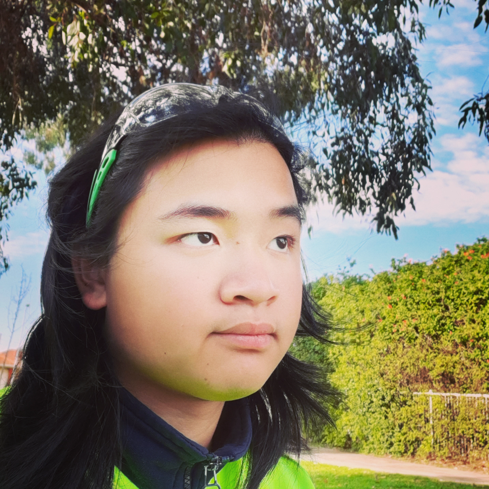
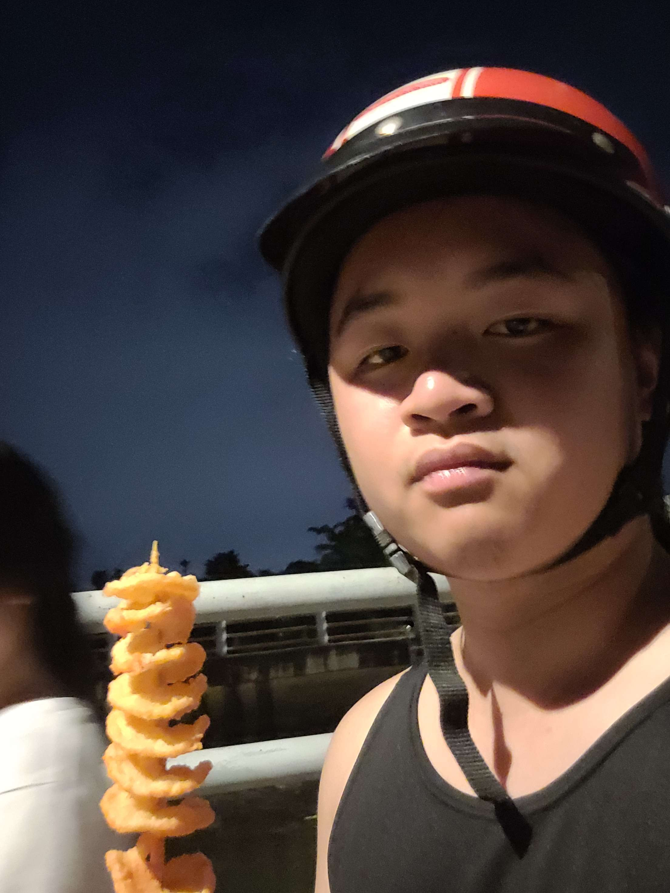

I am eager to leverage my hands-on experience in website design and maintenance as a potential web
development intern at your company. Additionally, results-driven Full-stack web developer with expertise in
frontend, backend languages, and additional technical skills. Committed to excellence, I aim to contribute
to dynamic projects and thrive in a fast-paced work environment.


My Resume
University of Adelaide (March 2023 - September 2023)
Full Stack Web Developer: Junior
Collaborated with a team of 3 members to successfully develop a fully functional shopping website,
demonstrating effective teamwork and project management skills.
Demonstrated the ability to work under tight deadlines by efficiently noting down tasks and prioritising
responsibilities during the development process.
Led the development of a fully functional shopping website as part of a 3-member team, showcasing
expertise in both frontend (HTML, CSS, and JavaScript) and backend technologies (Express, Jest, Node).
Westen Technical College (2019 - 2021)
Certificate 3 Carpentry: Partial
Collaborated with diverse teams to effectively complete various carpentry projects within specified
timelines, including constructing room, balance, and door frames.
Mastered the use of manual and power tools essential for carpentry tasks, including saws, screwdrivers,
pencils, circular saws, bandsaws, and measuring tapes.
Adhered strictly to safety regulations and procedures, ensuring a safe working environment at all times.
Emphasized cleanliness and organization during setup and cleanup processes.
Spray Painting Apprenticeship (2022 - 2023)
Position: Apprentice
Executed solo assignments ranging from small vehicle components to entire vehicles, including trucks and
buses,
while meticulously following established protocols.
Demonstrated an aptitude for rapid learning, facilitating seamless support for fellow team members and
ensuring
each task was completed to exacting standards.
Maintained strict adherence to safety regulations and procedures by proactively investing in additional
safety
masks and equipment, and diligently implementing safety measures such as the setup and operation of fans
to
safeguard personal and vehicular well-being.